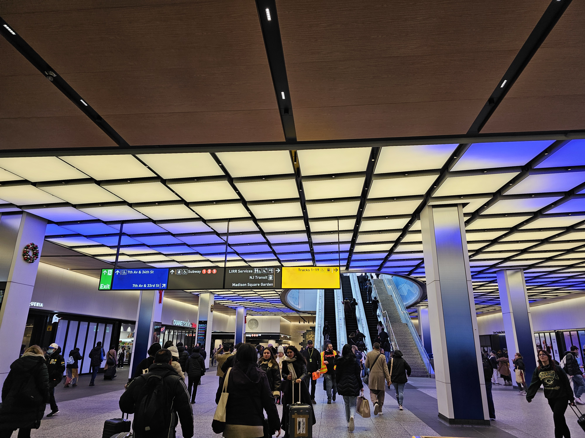

Why am I making this website?
Why am I building this webpage?
I'm making this website, for two main reasons.
One of them is to showcase my love for transit. Transit is one of my favorite modes of getting around.

While there are flaws within the transit system, it still is one of the most convenient ways to navigate your trips!
I've also become very intrigued by Grand Central, with its tale of two. Being the famous terminal, and its new LIRR Sibling.
The bigger reason?
To showcase the benefits of using the LIRR Grand Central Station to get around the city.
Many commuters find this station gigantic, confusing, and difficult to navigate.
Many also believe this terminal brings you to the middle of nowhere, and offers little to no benefits compared to using Penn Station.

However, I can help you overcome the challenges of navigating the complex with some tips and tricks.
To show the benefits and quirks of using the LIRR to Grand Central and its features.
In addition, I want to show how to get to some attractions and places located in the city, that one would typically do from Penn Station.
Thus, to show that there is yet another way, and perhaps an easier one to get to the place from Grand Central.

Some Helpful Links
Below, I have attached some links to help you learn more about this interesting station, as well as navigation tips and tricks, and a few links for research purposes.
Plan Your Visit
View The Long Island Rail Road Timetables or Schedules, to plan a trip.View this handy and helpful map diagram of Grand Central-LIRR.
Learn more about Grand Central
View A History of Grand Central Madison and how it came to be.View A Map Diagram of the entire Grand Central Terminal.
View this page, that showcases the need to know of Grand Central-LIRR.